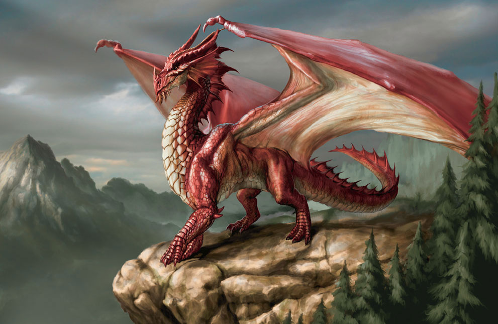

"Mom! Can we create more Fantasy Land?" Said Addison Tumbleweed. She was 10 years old and she lived in Florida. She and her mom started creating Fantasy Land when she was 5 years old and she was still creating when she was 10. It had so much from unicorns to dragons.
"No honey," said Mom "you're going to nature camp."
"When you get back we can." Said mom.
So Addison went to a nature camp but as they were hiking Addison got lost in the woods. “Huh?” thought Addison “where did they go?” She set off to find them.
Addison saw a streak of blue, “what is that?” Thought Addison. She followed it but it was too fast for her. “Oh no”, she thought. The other campers probably are looking for her. She raced around the woods trying to find them.
Addison ran so fast that she didn’t even know where she was going and suddenly she was somewhere other than the woods. The sky was sunny and she could hear talking somewhere in the distance, birds were chirping and the weather was pleasant. “Where am I?” Addison thought. She couldn’t be in the woods. In the woods it was damp and dark, the skies were cloudy and it was quiet. “Wow.” She said she was so happy to finally see some sun shining on her. She smelled the nice smell of flowers and she felt the warm breeze brushing against her face.
“Zip! Zip!” The same streak of blue was speeding through the grassy field but this time it was companied by a streak of pink and silver. Addison followed it, hoping to see what it was. Finally when they stopped and Addison catched up she couldn’t believe her eyes. They had horns and wings. Unicorns! “This can’t be happening,” said Addison. Addison had always thought unicorns were real but she never imagined she would see one.
Addison got closer to them. “Hi I’m Addison Tumbleweed, do you know where we are?” She said.
“Of course we do”, Said one of the unicorns.
“We are in Fantasy Land,” said another unicorn.
“Fantasy Land,” said Addison “my mom and I created Fantasy Land when I was 5 years old”.
Before anyone could reply they heard a terrible sound.“Roar!” A dragon said from a distance, they could see some flames coming out of its mouth.

“Run!” Cried the silver unicorn. Addison hopped on to the pink ones back and they flew into the clouds.
In a few seconds the wind was rushing across their faces and they could still hear the dragon gaining on them. Just when Addison thought they were doomed the blue unicorn shooted a big stream of turquoise magic from her horn “Whosh!” Addison watched as it hit the dragon. “Ahh!” said Addison as she got a face full of cold air.
“Roar!” The dragon cried in pain. The unicorns flew into a cave to hide. They tried to explain to Addison what had happened. “My name is Diamond”, said the blue unicorn, and these are my friends Buttercup”, Diamond said pointing to the pink unicorn “and this is Dash.” She said pointing to the silver unicorn.
“That dragon you saw is Flame, the unicorn eating dragon”, said Dash, “he was just after us a minute ago”.
Addison interrupted, “wait a minute”, she said “ me and my mom made Fantasy Land when I was 5 it had the exact same characters including you and it just became real?!” She asked.
“Probably”, said Buttercup “in Fantasy Land anything is possible.”
The 4 friends flew away from the cave to an open field. Unfortunately Flame saw them and dived towards them.
“Roar!” Said Flame. Dash, Addison, and Diamond ran away just in time to avoid the bite but Buttercup wasn’t so lucky. “Buttercup!” Cried Diamond. Dash shot a big burst of green light from her horn and it hit Flame.
Flame flew away in pain as Addison, Diamond, and Dash ran towards Buttercup. Buttercup who got hurt said, “Ouch! I’m okay. But Flame bit my leg, I don’t think I can walk anymore.”
“If I created Fantasy Land the only cure to dragon bites should be a potion from fairies called ’bite healer’. Fairies are supposed to live in a big maple tree. The fairies will only give the potion if we give them something in exchange.” Said Addison.
“What should we give them?” Said Buttercup desperately.
“How about a little bit of unicorn magic,” said Dash “It’s one of a dragons greatest weakness.” So Diamond filled a jar with some unicorn magic from her horn.
“Addison, which way should we go?” Said Dash.
“I don’t know.” Said Addison. Dash and Addison wandered around to try and find the fairies home while Diamond stayed with Buttercup.
After about an hour they finally reached the tree. Dash had left rocks behind so they could find their way back.
“Hi there Flora.” said Dash.
“Hi Dash”, said Flora the fairy “what brings you here.” She was quite tiny so she screamed for them to be able to hear her.
“We are here to collect some of the potion ‘bite healer’ in exchange for unicorn magic.” Responded Dash.
“Nah”, said Flora “I don’t want unicorn magic, I want that necklace you have on your neck.” Said Flora pointing to the necklace on Addison’s neck.
Addison ran her fingers through the chain of the necklace made of pure gold and she touched the silver letters on it saying ‘Addison’. She had had the necklace since she was born, she didn’t want to give it away. It was very special to her. But Buttercup had gotten hurt and she might die soon or worse already dead.
“Okay” said Addison after five minutes of thinking. She took off the necklace and put it into the fairies hand.
The fairy dropped a bottle of the potion and flew back into the maple tree. Addison stayed a little longer to peer through the gaps of the maple tree. She saw the necklace being put into a pouch by Flora and then locked up in a room.
Addison and Dash walked back to Diamond and Buttercup quitely. The warm air seemed to brush against their faces as the birds tweeted “tweet, tweet!”
After a while Dash said “I know how you feel, losing something special. That happened to me. It was a crisp morning as me and my family flew through the clouds, I was just born a few weeks ago when Flame sneaked up behind us and attacked my mom and dad. I flew away just in time to avoid his bite but he gobbled up my mom and dad. Diamond and Buttercup’s parents died by old age but I was orphaned until they found me and let me live with them.” Addison was shocked by that story.
By the time they got to Buttercup it looked like Buttercup had bled half to death. Little did they know that Flame was following them and now got a glimple of the unable to fly and defenseless Buttercup.
As Diamond went to Dash and Addison and all of them got distracted, meanwhile Flame was right behind Buttercup and suddenly.... "Roar!!!!" Flame attacked Buttercup and picked her up with his mighty claws. Before anyone could stop him he flew away with Buttercup.
Diamond flew after Flame and shortly returned. She told them the towards Flames home.
"Dash is the only one who knew the way to get back to Earth from Fantasy Land." Said Diamond.
"Can you show me the way out Dash?" Asked Addison hopefully. Since Buttercup was very important to Dash, Dash immediately refused.
"No way!" Said Dash. "If you didn't talk to us when you first came to Fantasy Land then Flame wouldn't ever had noticed us and chased us. Then he got Buttercup! I already lost my parents and I don't want to lose my freind. It's all your fault!" Screamed Dash at Addison.
Dash flew away with Diamond following her, they flew away from Flame's den probably thinking it would be impossible to get Buttercup back.
Addison knew better then giving up. She also knew it would only take about an hour for Buttercup to die from blood loss or she could be eaten even sooner by Flame. It was up to Addison to save Buttercup.
It took addison about 30 minutes to get to Flames den and about 15 minutes to dodge past Flame into the den. Addison only had about 15 minutes left.
"Help, someone help!" It was Buttercup. Buttercup was limping around pleading for help.
"I'm coming!" Whispered Addison. Unfortunately Flame just came back and could tell that someone was here, Flame started sniffing around to find them.
"Think, think!" Thought Addison "What do I have? I have a pouch of 'Bite Healer' and Unicorn magic."
Addison unloosened the cap of the jar of unicorn magic and let it out at Flame. While Flame was whining in pain Addison dropped a bit of 'Bite Healer' on Buttercup's leg.
Buttercup recovered and flew away with Addison quikly. They were just about to shoot some more magic when Flame explained something to them.

"Please don't hurt me! I only attack unicorns because I need to get some meat for my kids when they hatch." Said Flame pointing to some eggs with a sharp claw.
"Flame we won't attack you if you don't catch anymore unicorns. Then when I get back home I can change it so dragons and unicorns don't fight with dragons. I will also provide some food for your eggs." Said Addison
"Okay." Said Flame, grinding his sharp teeth after 2 minutes.
"Buttercup stop!!!" Yelled Addison "Lets listen instead of attacking first without listening."
"Okay!" Scowled Buttercup. Buttercup flew away with Addison.
Soon they were safely back in the field where Diamond and Dash were. "Hi! I'm back, with Buttercup!" Said Addison.
"Of course you did." Said Dash sarcastically.
"No really, I did!" Said Addison.
As Addison and Buttercuo got into Diamond and Dash's view Dash said, "OMG! I thought you were dead Buttercup! Thanks for saving her Addison!"
"Your bravery will always be remembered Addison." Added Diamond.
"In return we can give you this." Said Dash. Dash placed the necklace on Addison's hand.
"What! I thought we gave my necklace to Flora the fairy. Thanks!" Said Addison in suprise.
"We got it when you went to find Buttercup, we thought you would want it back so we got it for you, in exchange we gave Flora a bit of unicorn fur that they needed for an important potion." Said Dash.
Buttercup told what had happened to Flame and what Flame said. "Should I show you the way back?" Said Dash politely to Addison.
"Yes please." Replied Addison. Dash showed addison the way out.
"Thanks!" Said Addison, hugging each unicorn.
"Woosh!" And suddenly Addison was back in the woods.
"There you are," said the campers, "we have been looking everywhere for you."
When Addison was back home she made a few changes to Fantasy Land. She made sure dragons and unicorns don't fight and then she put some food for Flames eggs in Flame's den. "There, now everything is better." Said Addison.
"We can make more Fantasy Land now Addison." Said Addison's mom.
"Coming, yay!" Said Addison